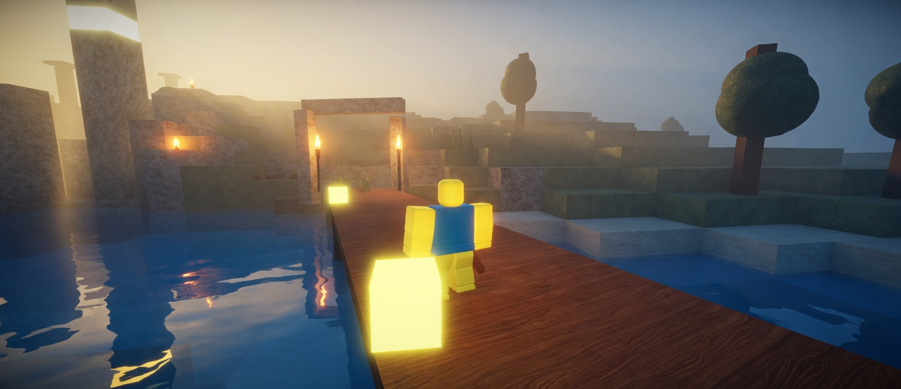
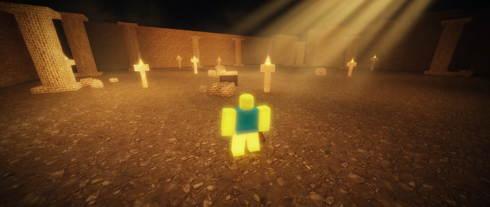
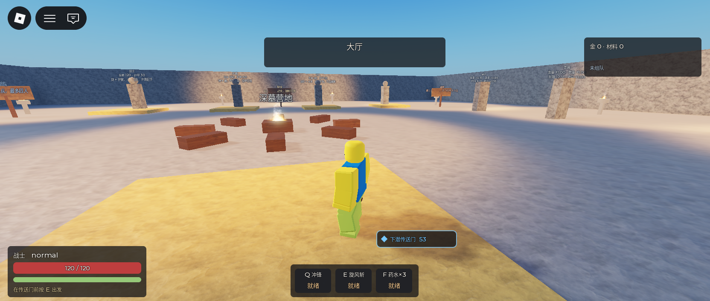
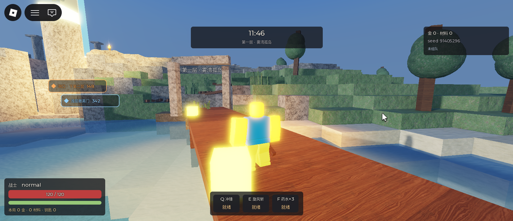
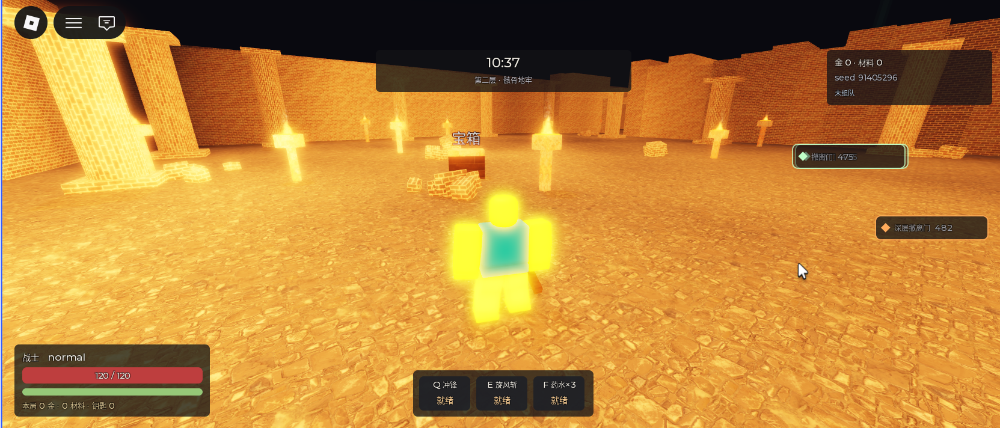

04 / 04
深墓
Delve
组队地牢撤离。第一层是海岸线即边界的雾湾孤岛，第二层是宏格房间地牢。带出来的才算收益，死在里面本局清零。现处于最后测试，暂未发布。
暂未发布
最后测试
硬时限、不可再生的生命、浅层与深层两道撤离门，构成三道赌注。带出来的才算收益。
每局有硬时限，到点未撤离判定死亡。局内没有自然回血，第一层被啃掉的每一口都在第二层结账。浅层撤离门系数 0.5，往下走收益翻倍，风险同步上升。
地图每局按种子生成。第一层由高度场切出孤岛，海岸线即边界；第二层是宏格房间加折线走廊。氛围锁在主题，难度锁在战力当量预算。大厅可选职业、组队、难度，再进入传送门。
- 类型
- 组队地牢撤离
- 人数
- 2–4 人
- 结构
- 孤岛 + 地牢，两层
- 状态
- 最后测试，暂未发布
核心循环
- 大厅出发选职业、组队、选难度，进入传送门
- 第一层孤岛散怪、宝箱、篝火；浅层门与楼梯并排
- 第二层地牢逐房激活，守卫房与库房是绕路选项
- 撤离结算带出来的强化两件装备，打得动更高难度
设计要点
带出来的才算
死在里面本局所得清零。浅层撤离能保住手上的东西，结算只有一半；往下走，收益翻数倍。
三个操作点
普攻、Q、E。不设格挡键与闪避键，移动端可原样搬成三个按钮加一个摇杆。不引入法力值。
战力当量铺怪
敌人数值全部反解。杂兵按单人口径，精英与首领按队伍口径。地形不承担难度，难度只由种类、数量与数值决定。
展示图

实机截图



展示图由实机截图重绘，去掉界面。点开可看原图。